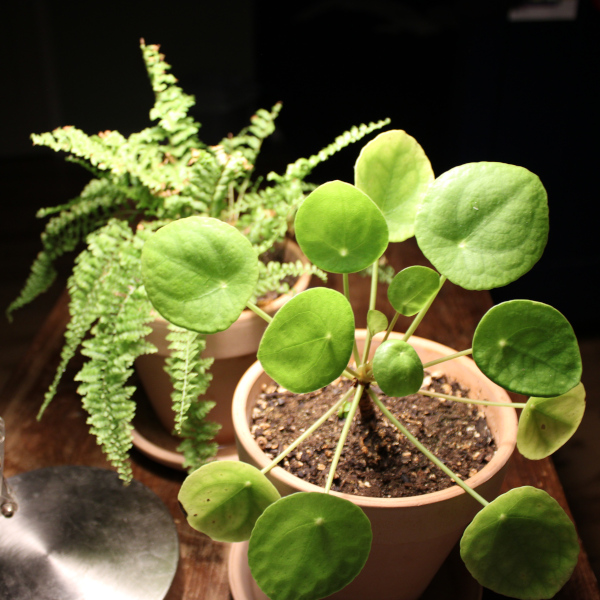

house plants
Pathos
Bright or low light but not direct light
Pale leaves mean too much light
Let soil dry
Fluffy Ruffle
Domesticated Boston Fern
Bright Indirect Light
Keep soil moist
Chinese Money Plant
Bright indirect light; yellowing suggests too little light
water when dry
Leaf curling suggests poor watering, or too much light
Dumb Cane
Indirect Light
Native to south/central America
mildy toxic
Keep soil moist. I failed to keep the soil moist this thing lost most of its leaves.
Misc. Wildflowers
Bright Direct Light
There are so nasty I'm probably going to abandon them in my apartment.
require thinning